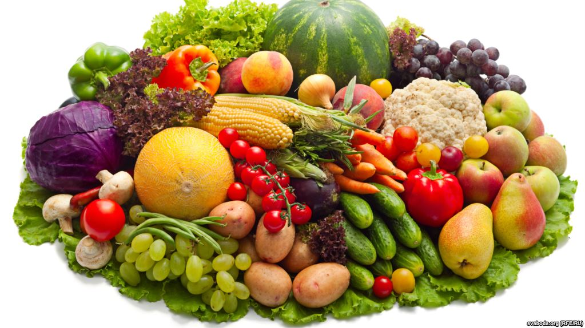

Спаржа иначе аспарагус – это кустарник, в пищу которого используются побеги. Являясь достаточно богатым по содержанию полезных веществ растением, она буквально придает неприятный запах выделениям тела, это польза и вред спаржи. Такой эффект наблюдается из-за расщепления серных соединений которые содержатся в растении, именно они придают нашему телу такой своеобразный запах. Он держится несколько часов, а затем все приходит в норму.
Несомненная польза спаржи для человека в веществах, которые очищают нашу кровь. Из-за своей низкой калорийности спаржа очень привлекательна для диетологов. Диета, с добавлением аспарагуса обеспечив организм необходимыми дозами витаминов и микроэлементов, в то же время ограничит поступление лишнего количества калорий.
Основная польза спаржи – это входящий в ее состав кумарин, он благотворно влияет на сосуды и функции сердечной системы.
Для беременных женщин польза спаржи заключается в наличии в ее составе фолиевой кислоты, которая обязательна для дам в интересном положении. Ежедневное употребление растения поможет справиться с импотенцией и существенно повысит половое влечение у мужчин.
Аспарагус белого цвета давно известен своими мощными противораковыми и бактерицидными свойствами, а это важная польза спаржи для нашего организма.
Вред спаржи в содержании в ее составе кислоты, которая приводит при злоупотреблении продуктом к образованию мочекаменной болезни.
У некоторых людей встречается аллергическая реакция на растение, конечно, это вопрос индивидуальной переносимости спаржи.
Употребление продукта может привести к нежелательным последствиям для людей с заболеваниями циститом, простатитом и ревматизмом. Из-за сапонина, который находится в растении, вред спаржи наблюдается у людей с больным желудком и кишечником, так как это вещество раздражает слизистую.
Для кого польза, а для кого и вред спаржи заключается в ее сильном возбуждающем действии. В прошлом веке она была запрещена в рационе для служителей церкви по причине увеличения сексуального аппетита.
Конечно, польза и вред спаржи строго индивидуальны, с заболеваниями костной ткани и мочеполовой сферы она не рекомендуется в больших количествах, а для других людей полезные вещества и витамины с лихвой окупают недостатки этого изысканного продукта.